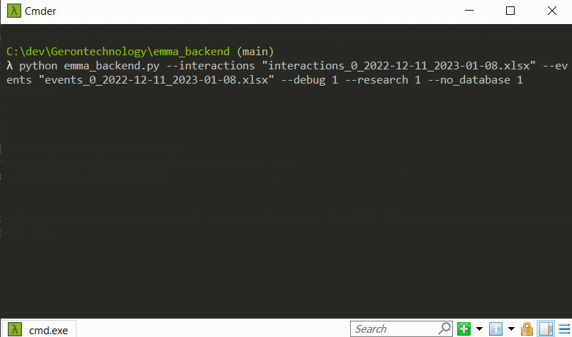
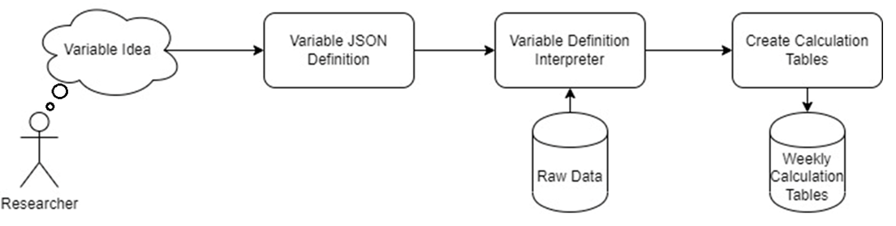
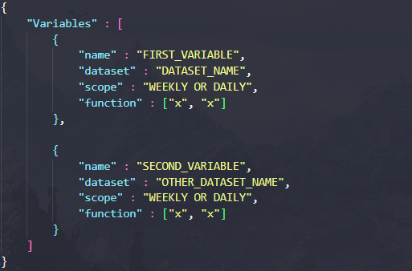
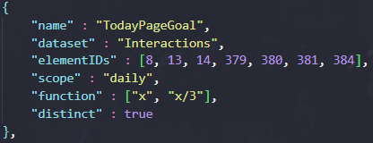
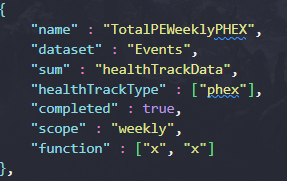
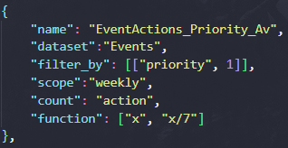
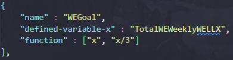
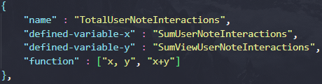

This page contains all you may need to know about how the EMMA back-end software. This documentation provides details about how to run it, debug it, and traverse its source code. If you are looking for something specific, feel free to use the navigation bar to directly go to one of the sections in this document.
You can access all code for this project through the GitHub Repository: Click Here
1. Install Python3
2. Install Pip
3. Clone the repository to your local computer (or access it through a server)
4. Open a console window in the [.../emma_backend] directory
5. Run, pip install -r requirements.txt, to get all python packages to run code
6. Run python emma_backend.py with command line arguments
The python script, emma_backend.py, is home base for running all data wrangling needs for EMMA. If you want the script to do specific actions, it will require configuring its command-line arguments/parameters.
Command-line arguments typically follow this convention: [--argument] [parameter], where argument specifies a feature in the program, and the parameter is the value you provide for that argument. For string arguments that have spaces in them, use quotation marks (i.e ""). Argument definitions are provided below:
[--interactions] [relative/path/to/interaction/table] :: This is the excel file containing unprocessed interaction data from the EMMA app. The path provided to the excel file is relative, from the input directory which is located at [.../emma_backend/data/input]. If the interaction table is in this directory, you can just provide the name of the excel file.
[--events] [relative/path/to/event/table] :: This is the excel file containing unprocessed events data from the EMMA app. The path provided to this excel file is also relative, from the input directory. If the event table is in this directory, you can just provide the name of the excel file.
[--research] [1 or 0] :: When 1, will output results to the research/data directory, separating tables by study and cohort. If 0, the output calculation tables will instead be sent to [.../emma_backend/data/output]. Defaults to 0.
[--no_database] [1 or 0] :: When 1, will use the research participants folder, located at [.../emma_backend/research/participants], for participant demographics instead of a back-end database. Defaults to 0.
[--debug] [1 or 0] :: When 1, Prints processes to console throughout the runtime of application. Defaults to 0.
[--print_variables] :: When this argument is provided, no data-wrangling is run. Instead, the program loads in and compiles the JSON variable definitions, and print their interpreted definitions to the screen.
[--help] :: When this argument is provided, no process is run, but the help manual is printed to the console.
This section is meant to provide a clear guide to define research variables for the data-wrangling application. Research variables are defined in the JSON variable definitions file located at [.../emma_backend/data_wrangling/src]. These variables follow a rigid structure and syntax so that the program and interpret and calculate these variables quickly.
Since the variable definitions key uses JSON, which is an attribute-notation markup language, we need to use the correct configuration and formatting. Before any data-wrangling is done, the program will read this JSON file for current and new variable definitions. More specifically, the program will be looking for a Variables attribute which will contain a list of variable definitions. If the file doesn't have this initial setup, the program will not run. An example of the proper setup is shown below.
Every variable definition will be an element in this variable list. Subsequently, each variable will contain its own set of attributes to define and extrapolate the context of what to calculate. Some variable attributes are universal and must be used in each new definition, while others are dataset-specific, and should thus only be provided when the context demands it. All variable attributes and their contexts will be explained below.
There are three types of variables: interaction, events, and reference variables. Interaction variables calculate data from the Interactions table, while event variables calculate data from the Events table. Reference variables do not calculate new data from these tables but uses already calculated variables to do further calculations. Reference variables can use a defined-variable-x and a defined-variable-y which can reference any variable from any table, even other reference variables.
These are attributes that all definitions can and should use. All variables MUST include a name, and a dataset UNLESS the new variable is using values from an already defined variable. The variable MUST also include a function attribute. Some attributes can be omitted, and their default values are provided below.
["name"] [attribute type: str] :: the name of the new variable.
["dataset"] [attribute type: str] :: the name of the dataset that this variable will look for data. The attribute must either be "Interactions" or "Events", There cannot be more than one dataset.
NOTE: The dataset attribute is only required for interaction and event variables. Reference variables do not and should not use the dataset attribute but the defined-variable attributes instead. If you want to define a variable to combine data from datasets, it is advised that you should first define an interactions variable, an events variable, and then define a reference variable that uses predefined attributes.
["defined-variable-x"] [attribute type: str] :: this is a name of an already defined variable that should be used for the function attribute's x, rather than the aggregation of data from a dataset. If defined-variable-x references a daily variable, do not provide its week day; the program will do this automatically.
["defined-variable-y"] [attribute type: str] :: this is a name of an already defined variable that should be used for the function attribute's y, rather than the aggregation of data from a dataset. If defined-variable-y references a daily variable, do not provide its week day; the program will do this automatically. Defined-variable-y should only be used if defined-variable-x is used. If y is provided without an x, an error will be thrown.
["function"] [attribute type: list[str]] :: the function attribute defines what to calculate after aggregation. This attribute is a list with exactly two elements. At index 0, provide the variables that this function will use. Only x and y variables are allowed, so first index should look like "x", or "x,y". At index 1, provide the function to do with this variable(s), example: "x/7". In this example we are telling the problem, given an x, divide it by 7. Unless predefined variables are defined, "x" is always the sum or count of rows.
["scope"] [attribute type: str] :: a variable's scope can either be "daily" or "weekly". The scope defines the range where data is aggregated. If weekly, data will be aggregated from the beginning of Sunday to Saturday. If daily, this variable will turn into 7 variables, each with the provided variable name and its respective day of the week appended to the end. Each daily variable will aggregate data only from its day. Defaults to "weekly".
NOTE: Reference variables do not use the scope variable at all. Instead, the scope is interpreted based on the scope of its defined variables. Reference variables will have weekly scope if its defined variables have weekly scope, but if defined-variable-x and/or defined-variable-y have a daily scope, the reference variable will be daily, and 7 reference variables will be created.
["study"] [attribute type: list[str]] :: the study attribute is a list of studies this variable is calculated for. This reduces the size of research tables per study to not include extra unnecessary variables. If the study attribute is omitted, the program will assume this variable is "universal" and will include it in all studies.
These are attributes that variables using the interactions dataset should use. When using interaction datasets always include elementIDs. The rest can be omitted and have default values.
["elementIDs"] [attribute type: list[int]] :: a list of the elementIDs to be counted per user. When the list is empty, will count all elementIDs.
["distinct"] [attribute type: bool] :: boolean value that when true, the program will only count distinct uses. Defaults to false.
["tokens"] [attribute type: list[str]] :: a list of tokens to filter uses by. When this is omitted, there is no token filtering.
["type"] [attribute type: str] :: a string to filter the rows of the interaction table by with values in the type column. When this is omitted, there is no filtering by type.
["source"] [attribute type: str] :: a string name of the source by which this interaction came from ("web" or "app"). When this is omitted, there is no filtering by source.
These are attributes that the variables using the events dataset should use.
["sum"] [attribute type: str] :: this is the name of the column to summate values from.
["count"] [attribute type: str] :: this is the name of the column to count row entries from. (sum and count cannot be defined in the same definition).
["healthTrackType"] [attribute type: list[str]] :: a list of types in the healthTrackType column to filter by.
["completed"] [attribute type: bool] :: boolean value that when true, the program will only count completed events, using the value in the completed column. Defaults to false.
["filter_by"] [attribute type: list[list[str, varies]]] :: a list of pairs to filter the sum or count by. Each element in the filter_by list will look like [“column_name”, row_value]. The row_value can be a: integer, string, a boolean, or a list of integers.
CalenderUse uses the Interactions dataset, counting all occurrences of elementID [9]. This variable uses a daily scope, which means this will create 7 variables as output for each weekly calculation table. The function ["x", "x"] means to only count the occurrences and nothing further.
TodayPageGoal uses the Interactions dataset, counting all occurrences of elementIDs [8, 13, 14, 379, 380, 381, 384]. This variable uses a daily scope, which means this will create 7 variables as output for each weekly calculation table. The variable uses the distinct attribute, which is set to true. This means that the variable will only look at interactions separated by at least 5 minutes. Finally, the function attribute defined as ["x", "x/3"], means that after counting all the elementIDs for each participant, it will divide that total by 3.
TotalPEWeeklyPHEX uses the Events dataset, which requires different attributes than the Interactions dataset. The sum attribute defined as "healthTrackData", means to sum up all the values for each participant in the healthTrackData column. However, we have some attributes that are used to filter these results before summing the values. "healthTrackType" : ["phex"] means that we will only count rows with the "phex" tag. We use the completed attribute as true to further filter the results to only have rows with the completed value equal to 1. The scope of this variable is weekly so it will look at all the rows throughout the week in its calculation. The function attribute ["x", "x"], means that after the sum is calculated per participant, to do nothing further.
EventActions_Priority_Av uses the Events dataset with a weekly scope. It filters the rows with the filter_by attribute to only include rows where the priority column in those rows is equal to 1. It uses the count attribute instead of the sum attribute, so it will count the row occurrences for each participant after the filter_by step. The function attribute ["x", "x/7"] means that after counting all the rows, divide that result by 7. Since the scope of this variable is weekly and the function divides this value by 7, this variable is calculating an average through the week.
WEGoal is a reference variable, since it does not use the dataset attribute but instead the defined-variable-x attribute. The defined-variable-x attribute points to the TotalWEWeeklyWELLX variable. This means it will use the values calculated by this variable for new calculations. The function attribute is defined as ["x", "x/3"], which means that for each row in the TotalWEWeeklyWELLX column in the calculation table, it will use the value and divide it by 3 for this variable's final calculation. Since TotalWEWeeklyWELLX was a weekly scope, WEGoal is also a weekly scope and only 1 variable will be created in the calculation table.
TotalUserNoteInteractions is a reference variable that uses two references in its calculations. It uses the defined-variable-x to declare a reference to SumUserNoteInteractions, and defined-variable-y to reference SumViewUserNoteInteractions. These two variables will be known as x and y in the function attribute respectively. The function attribute, ["x,y", "x+y"], formally declares x and y, and then says for each row in the calculation table, add x and y. In this case, it will add the row calculation of SumUserNoteInteractions with SumViewUserNoteInteractions. The scope of this variable is daily, since while SumUserNoteInteractions_Av is weekly, SumViewUserNoteInteractions is daily so this new variable will take the daily scope as higher precedence. So, this reference variable will have 7 columns in its calculation table referencing each day of the week.